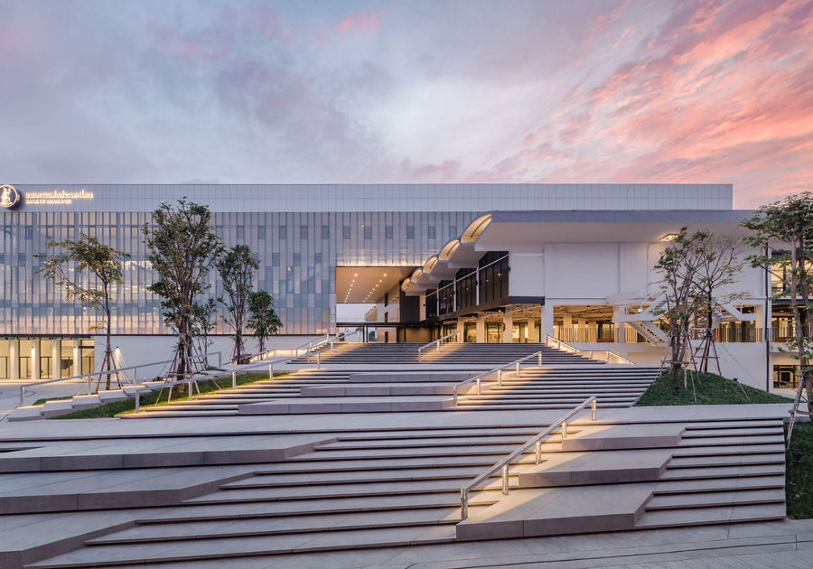

ห้องสมุดศูนย์การเรียนรู้ธนาคารแห่งประเทศไทย

ห้องสมุดศูนย์การเรียนรู้ธนาคารแห่งประเทศไทย
เป็นพื้นที่เปิด ตั้งอยู่ริมแม่น้ำเจ้าพระยา ซึ่งเดิมเคยเป็นอาคารโรงพิมพ์ธนบัตรธนาคารแห่งประเทศไทย ประกอบด้วยพิพิธภัณฑ์ธนาคารแห่งประเทศไทย ห้องสมุดพระองค์เจ้าวิวัฒนไชย หอจดหมายเหตุ และพื้นที่นันทนาการ
ศูนย์การเรียนรู้แห่งนี้ยังเป็นการเปิดประตูบ้านของ “แบงก์ชาติ” เพื่อต้อนรับผู้มาเยือนที่สนใจพิพิธภัณฑ์ซึ่งรวบรวมเรื่องราวการทำหน้าที่ของเรา และประวัติศาสตร์เศรษฐกิจในช่วงต่าง ๆ ที่ประเทศเผชิญกับความท้าทายทั้งด้านเศรษฐกิจและการเมือง ตลอดจนข้อคิดและบทเรียนจากบุคคลต่าง ๆ ที่มีส่วนในการขับเคลื่อนระบบเศรษฐกิจและการเงินของประเทศให้สามารถวิวัฒน์และพัฒนามาจนถึงทุกวันนี้ เพื่อสร้างแรงบันดาลใจให้กับอนุชนรุ่นหลังผู้ที่จะเป็นกำลังสำคัญ ในการพัฒนานำพาประเทศให้ก้าวหน้าไปในอนาคตอย่างมั่นคงและยั่งยืน
เป็นพื้นที่เปิด ตั้งอยู่ริมแม่น้ำเจ้าพระยา ซึ่งเดิมเคยเป็นอาคารโรงพิมพ์ธนบัตรธนาคารแห่งประเทศไทย ประกอบด้วยพิพิธภัณฑ์ธนาคารแห่งประเทศไทย ห้องสมุดพระองค์เจ้าวิวัฒนไชย หอจดหมายเหตุ และพื้นที่นันทนาการ
ศูนย์การเรียนรู้แห่งนี้ยังเป็นการเปิดประตูบ้านของ “แบงก์ชาติ” เพื่อต้อนรับผู้มาเยือนที่สนใจพิพิธภัณฑ์ซึ่งรวบรวมเรื่องราวการทำหน้าที่ของเรา และประวัติศาสตร์เศรษฐกิจในช่วงต่าง ๆ ที่ประเทศเผชิญกับความท้าทายทั้งด้านเศรษฐกิจและการเมือง ตลอดจนข้อคิดและบทเรียนจากบุคคลต่าง ๆ ที่มีส่วนในการขับเคลื่อนระบบเศรษฐกิจและการเงินของประเทศให้สามารถวิวัฒน์และพัฒนามาจนถึงทุกวันนี้ เพื่อสร้างแรงบันดาลใจให้กับอนุชนรุ่นหลังผู้ที่จะเป็นกำลังสำคัญ ในการพัฒนานำพาประเทศให้ก้าวหน้าไปในอนาคตอย่างมั่นคงและยั่งยืน
การเดินทาง
การเดินทาง
ทางเรือ: ลงที่ท่าเรือเทเวศร์ ซึ่งมีเรือด่วนเจ้าพระยา (ธงสีส้ม ธงสีเขียว ธงสีเหลือง) และเรือข้ามฟากให้บริการ
โดยรถประจำทาง: สายรถเมล์ที่ผ่าน ได้แก่ สาย 3, 9, ปอ.9, 30, 32, 33, 43, 49, 53, 64, 65, 524 (ป้ายหน้า ธปท.)
ข้อมูลเพิ่มเติม
ที่ตั้ง: 39 อาคาร ค ถนน ราชดำเนินกลาง แขวงตลาดยอด เขตพระนคร กรุงเทพมหานคร 10200
เวลา:
- วันจันทร์-ศุกร์: 08:30 - 16:30 น. (ปิดวันหยุดราชการ)
ดูข้อมูล: https://www.facebook.com/BOTLearningCenter หรือ https://www.bot.or.th/th/home.html